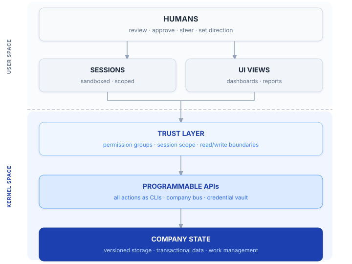

The AI-Native Company Blueprint
An operating system for running a company on AI as the underlying infrastructure.
Work in Progress — This is an early draft shared for feedback. Comments and discussion welcome via GitHub Issues or LinkedIn.
TL;DR / Executive Summary
A set of principles and an implementation walkthrough for building an AI-native company from the ground up — freeing humans to review work, steer, and make decisions rather than running low-level actions. The core principles: the company is defined by its version-controlled data and code; all company systems expose an API; a unified deterministic layer (the Company Bus / Company Kernel) mediates all API access, permission control, security, and audit logging; sandboxed AI sessions call through this layer for any action with side effects; and a task management mechanism progresses the company forward while halting when the human review backlog grows too large.
For technical readers: this operating model gives rise to the company as an operating system. The company has a kernel for all privileged APIs, creating an elegant separation of kernel-space vs. user-space actions. AI sessions are user-space sandboxed processes sending system calls to the company kernel for any action that affects the company.
Note: This text reflects the author's perspective, informed by experience and early results. Implementing AI in business settings is still new and evolving, and must be approached with humility and a commitment to continuous learning.
What This Is
This document describes an operating model for a company where AI agents do the work and humans make decisions. It is not about using AI to assist employees — it is about building the company so that AI operate it, and humans steer.
"Every company in the world today needs to have an OpenClaw strategy, an agentic system strategy. This is the new computer. This is as big of a deal as HTML, as big of a deal as Linux." — Jensen Huang, NVIDIA CEO, GTC 2026 (March 17, 2026)
The document is organized in two parts. Part I establishes the foundational principles — tool-agnostic and durable. Part II presents one opinionated implementation of those principles, with specific technology choices and design decisions. The principles stand on their own; the implementation is one way to realize them.
We then explore how this operating model maps elegantly onto the architecture of an operating system — a more conceptual section that can inform how we think about building and evolving AI-native organizations.
Part I: Principles
Principle 1: Unified, versioned state
A traditional company's state is scattered across email threads, chat messages, Docs, PDFs, spreadsheets, tickets, people's heads, databases, and local machines. AI can only work on data it has access to. The variety of sources makes retrieval inefficient and access management hard.
The company's state must live in a single, accessible, version-controlled system. No tribal knowledge, no scattered silos. Data may be unstructured (prose, attachments) or structured (YAML, tables) — the more structured, the more efficiently agents can operate on it. Every piece of data that may drive action or decision must be captured here: versioned, attributed, and reviewable.
Example we like — GitLab's handbook-first culture. GitLab runs their company via a version-controlled handbook: every policy, process, org structure, and decision lives in git. The discipline is enforced culturally: no decision is complete until it is documented there. For AI agents, this is an exemplar of Principle 1 (P1, hereafter) — a queryable, attributable, always-current source of company truth. GitLab's internal version is almost certainly richer still.
Principle 2: All actions must be programmable
Every action — creating, updating, sharing, transacting, filling out forms — must be executable via a programmatic interface. This is not about replacing humans; it is about ensuring agents are never blocked by a UI-only path.
Example we like — Google's internal developer tooling. Every internal system at Google is reachable from the command line: either a purpose-built high-level CLI, or — where one doesn't exist — a generic tool that accepts a text-encoded protobuf and fires it as an RPC to an internal endpoint. No action requires a browser. And because the proto definitions live in the same monorepo as the services, the entire API surface is self-documenting and version-controlled — an agent can read the schema and know exactly what to send. An agent navigating Google's internal infrastructure has a complete programmatic surface for everything, with no UI-only dead ends. This is what P2 looks like at scale.
Principle 3: GUI is a view layer, built on top of APIs
Graphical interfaces sit above the API layer and never touch data directly. They call the same APIs that agents call. This means humans and agents always have a consistent view of the data — there is no "human version" of the truth that differs from what agents see.
GUI is for human consumption and collaboration. It renders data; it does not define it. For most analytical and operational use cases — "what is the state of the company?", "what happened last week?", "what needs my attention?" — the agent is a better interface than any static dashboard: it answers any question, at any level of detail, from the same underlying state. Dashboards are a convenience for at-a-glance monitoring; they are not a structural requirement. Plus, they can be generated on demand by agents.
Example we like — Grafana + Prometheus. Every Grafana panel is a saved PromQL query. Prometheus exposes its full query surface as an HTTP API — the same one Grafana calls. An agent can answer any question a dashboard can answer, because it has identical access. The GUI adds nothing to the data; it only renders a pre-selected slice of it.
Principle 4: Agents as organizational infrastructure
Agents are not personal assistants — they are organizational infrastructure, defined by code like any other system component. Think Infrastructure as Code, but for agents: their behavior, knowledge, memory, and mandates are declared in versioned configuration and code. There is no private agent state outside the company data — no AI tribal knowledge. Personalization is achieved by focusing on the relevant portion of company state — there is no out-of-band customization.
Agents operate the company: they initiate work, produce artifacts, and act within their mandate. Humans steer: they set direction, review outputs, and approve consequential actions. Agents may adapt their behavior based on audience or context, but that adaptation is driven by data in the repo, not hidden internal state.
Example we like — Claude Code. Claude Code anchors on a repo you choose.
CLAUDE.mdfiles carry versioned knowledge and instructions that shape every session. Memory can be configured to write into the repo itself (autoMemoryDirectory, recently supported), making agent learning a first-class git artifact. The hooks system lets sessions update company state on every significant action — session start, tool call, session end — bridging the gap between ephemeral sessions and persistent organizational memory. Two things we'd ask of the Claude Code team: (1) a first-class data structure to represent the session, so it can be stored remotely and resumed from any machine (hooks get us most of the way there already), and (2) support forautoMemoryDirectoryinsettings.json, not justsettings.local.json.
This principle may not be popular with AI-fluent employees who already have a supercharged setup — albeit a local one. But an AI-native company cannot accept outcomes generated from hidden knowledge, memory, or skills. These capabilities must be company assets, shared across everyone.
Principle 5: Trust tiers define the company's permission structure
Since the company is its data, access to that data defines organizational trust. The company is partitioned into trust tiers — groups of data with different read permissions. These tiers are declared and version-controlled as part of the company's state.
Read permissions determine what agents and humans can see. Write permissions are the mechanism for approving changes — you can only merge changes into data you are authorized to govern. Write permissions may be configured to allow agents to commit changes autonomously in areas where full delegation is acceptable, or review is done after the fact.
Example we like — GitHub branch protection + CODEOWNERS, managed as IaC. GitHub's branch protection rules and
CODEOWNERSfiles implement write-as-merge-authority cleanly: only the declared owners of a path can approve changes to it. The tools to extend this across the full permission surface exist and are standard — Terraform has a GitHub provider, and every major cloud has IaC for IAM (GCP IAM, AWS IAM, etc.). The missing discipline is wiring them together: a single identity declaration in the repo that drives GitHub permissions, DB access, and storage policies simultaneously.
Principle 6: The session is the atomic unit of AI interaction
Every AI interaction is a session. A session's scope is defined by a set of read permission groups it assumes — set at creation and immutable for the lifetime of the session. Read access is the single source of truth: it determines what data the agent can process, what APIs it can call, where outputs are written, who can see logs, and what the agent can commit to company state. All access parameters derive from read permissions — nothing is specified separately.
There are no persistent agent identities — only session identities. The agent is stateless between sessions; all identity and authorization lives in the session.
What is an "agent"? An agent is simply a session type — a label for sessions that share the same read permission group. If the company's read permission groups are nested (like security clearance), then each group defines one agent type. The word "agent" is a convenient shorthand, not a distinct entity. In practice, the only question that matters for any given session is: what read permission group is this session running under? Everything else — what it can see, call, write, and log — derives from the answer.
When humans initiate an interactive session, the session scope is the intersection of all participants' read permission groups. Scope is immutable — participants cannot be added mid-session, only removed. Autonomous sessions assume a fixed scope defined in the repo.
Principle 7: Human accountability over company state
Agents produce work faster than humans can review it. The system is designed so humans remain accountable for what enters company state — not by forcing review of everything, but by making the review burden manageable.
Write permissions are configurable: some parts of the company state may be fully delegated to agents (no human review required), others require human approval. This delegation is explicit, versioned, and a conscious choice by the humans who govern that data.
When agent output exceeds human review capacity, autonomous work pauses. The goal is not to minimize human review — it is to keep state transitions realistically reviewable, so accountability remains meaningful rather than nominal.
Principle 8: Everything is auditable and replayable
Every action, state transition, credential use, and session is logged with full attribution — who or what did it, in which session, under which permission scope, and when. The audit trail is a first-class output of the system, not an afterthought.
Session logs are first-class company data — high-churn by nature, stored in the transactional layer alongside issues and work logs. They enable full replay of past sessions, post-mortems, and — critically — automated self-correction: future sessions can learn from past ones, evolving agent behavior without human intervention beyond approving the resulting changes.
Because all actions flow through a programmable layer and all state lives in versioned storage, comprehensive auditability is a natural consequence of the architecture, not extra instrumentation.
Example we like — LangSmith. LangSmith traces every LLM call and tool invocation in a session: inputs, outputs, latency, token counts, and the full call tree. Traces are queryable via API, enabling automated evaluation and regression testing against past sessions. This is P8 for the AI layer specifically — and the right mental model for what the full audit trail should look like across all layers of the company.
Principle 9: Structured work management as the engine of progress
An AI-native company needs a unified, programmable work management system — not just for coordination, but as the primary mechanism for advancing company state. It generates tasks on cadence or external triggers, tracks work in progress, captures work logs, and expresses dependencies and relationships between units of work.
This system is the engine: it is how the company moves forward autonomously without constant human prompting. Humans use it to review what happened and what is in flight. Agents use it to claim work, log progress, and trigger downstream tasks.
The system must be fully API-accessible. The specific form is an implementation choice.
Health is part of the engine. The work management system continuously asserts that the company is operating within healthy bounds — services are up, state matches declarations, queues are draining, SLAs are met. When an assertion fails, it generates work: an issue is created, a circuit breaker trips, or an alert is raised. Health checks are not a separate monitoring layer; they are first-class work items that flow through the same system as everything else.
Example we like — Linear. Linear is built API-first: every issue, project, and workflow state is accessible programmatically. They have invested in a first-class Agent SDK, treating agents as a distinct interaction surface rather than bolting on API access as an afterthought. Issues can trigger sessions; sessions update issue state as they progress. It is the closest existing product to what P9 describes — a work management system that is also an execution engine.
Principle 10: Sessions are sandboxed and ephemeral
Every session runs in an isolated container. The container is provisioned with the company's current state (a checkout of the relevant repo) and can interact with the outside world only through the Company Bus APIs. Inside the container, the session can do whatever it needs — run code, write files, spin up processes — without risk of affecting anything outside.
When the session ends, the container is scrapped. Nothing persists on it. Any output that matters must have been committed to company state (via a PR or a DB transaction) before the session concluded — otherwise it is gone.
Session resume is supported: a fresh container is provisioned, the prior conversation is loaded as context, and the session picks up from the current repo state. The container is still new; only the conversation history carries over.
Sessions must never run on end devices. A session running on a human's laptop has access to that person's local files, credentials, browser, and network — none of which are governed by the session's trust scope. End-device sessions break the sandboxing guarantee, create audit gaps, and are a hard no. End devices belong to the UI Views layer — they are the means by which humans review and interact with company state, not the environment in which sessions run.
Example we like — Claude Code in ephemeral containers (+ NemoClaw on the horizon). Our current implementation of choice is Claude Code running in an ephemeral container: settings allow configuring auth and project context at session start, and remote-control means sessions can be observed and interacted with on the go. NemoClaw is a notable emerging alternative: kernel-level sandboxing, default-deny networking with per-connection approval, and a full audit trail out of the box.
The Architecture
The diagram below shows the conceptual layers. Arrows show the direction of interaction — humans initiate sessions and UI views; both are gated by the trust layer; actions execute against the API layer; all changes land in company state.

Sessions and UI Views are peer interaction modes — both feed into the trust layer, which gates all access to the API and state layers. Work management data lives inside company state, not as a separate layer — it is the engine that drives the company forward from within.
Part II: Opinionated Implementation
The following sections describe one concrete way to implement the principles above. Technology choices are specific but not mandatory — what matters is satisfying the principles, not replicating these choices exactly. It is given as a concrete example, albeit hypothetical (for now).
II.1 The State Store: Three Repos and Cloud Data
(Implements Principle 1)
The entire company state is defined by two things: git repos and cloud data.
- All knowledge, configuration, workflows, playbooks, schedules, and agent memory live in git repos as markdown, code, and structured text files (JSONL, YAML). Same for data on employees, finances, and roadmaps. In cases where external software is needed due to compliance or standard (e.g. QuickBooks for accounting), a mirror is created in the repo with a syncing mechanism.
- Data that cannot live in repos — customer records, binary assets, large datasets, high-churn items like bugs and tasks — lives in cloud storage and databases with transactional semantics and audit trails.
- Documents produced for human consumption (PDFs, slides, dashboards, rendered HTML) are outputs, never sources of truth, and are not considered part of the state.
- Email and chat are not state. They are means to transfer information in flight. Any information that matters must be materialized into a PR or a database transaction. Emails and chat messages are TTL'd and may be kept for archival purposes, but they are never the source of truth for anything.
- Human laptops are ephemeral. Nothing material exists on a local machine that isn't in a repo or cloud storage. If a laptop is lost, nothing is lost.
Every change to the company's state flows through a pull request or a logged database transaction. There are no back-channel changes, no "I'll update the doc later," no tribal knowledge that exists only in someone's head or buried in an email thread.
Live infrastructure converges to the repo. Every service polls the main branch on a regular schedule (e.g., every 5 minutes), pulls the latest state, syncs dependencies, and restarts on changes. This means running infrastructure stays in sync with the repo automatically — there is no manual deploy step and no configuration drift. Any change to infrastructure, agent behavior, or system configuration goes through a PR to main, and running services pick it up within minutes. Services that fail to self-update surface as anomalies in telemetry.
Why repos? Because git gives you versioning, branching, diffing, attribution, and review (PRs) for free. These are exactly the properties you need when agents are making changes autonomously — every change is traceable, reviewable, and reversible. Repos are kept linear with a single main branch. Any other branch is considered ephemeral and not part of the state.
Object Storage: Immutable Blobs by Reference
Binary assets, rendered outputs, and large generated artifacts (PDFs, images, compiled binaries, model weights) cannot live in git. They live in object storage — a separate tier governed by two hard constraints:
- Append-only. Objects are never overwritten in place. Every write produces a new object with a new content-addressed key. An existing object, once written, is immutable for its lifetime.
- Referenced by the repo. The repo holds the pointer, not the blob. A repo file contains the object's key or URL; the object is never embedded in the repo directly. Changing what a pointer points to requires a code change — which goes through a PR, gets reviewed, and lands in the audit trail like everything else.
Together, these two constraints mean a session can only add objects — it can never silently replace something a previous session wrote. Updating a generated artifact (e.g., replacing last week's report PDF) requires a PR that updates the pointer. The old object remains intact until its TTL expires.
TTL and lifecycle. Objects are assigned a TTL at write time based on their type — ephemeral outputs (decision pages, draft attachments) get short TTLs; canonical artifacts (signed contracts, compliance exports) get long ones. Expired objects are garbage-collected automatically. TTL policy is declared in the repo alongside the code that produces the objects.
This design makes object storage safe for autonomous agent use: a session can produce and publish artifacts freely without the risk of corrupting shared state. The worst a misbehaving session can do is create new objects; it cannot modify or delete existing ones.
II.2 The Company Bus and CLI-First APIs
(Implements Principles 2, 3, and 10)
The Company Bus
The foundation of the API layer is the Company Bus — a distributed server that owns all API integrations and all credentials. It is a fully deterministic classical service: no LLM code, no non-deterministic logic, ever. Every call to an external system (email, calendar, CRM, cloud APIs, internal databases) goes through it. Being distributed, it scales horizontally and has no single point of failure — a requirement given that every session in the company depends on it.
Keeping the Bus deterministic is a hard architectural constraint. Scheduled jobs that require AI judgment are dispatched as messages to ephemeral session containers, which run them as autonomous sessions. The Bus is the scheduler and dispatcher; session containers are the workers. This separation keeps the Bus auditable, predictable, and easy to reason about — and ensures credentials and non-deterministic code never coexist in the same process.
Credentials never leave the Company Bus. All API keys, OAuth tokens, and service account credentials live in a vault managed by the Bus. Sessions never see raw secrets. When a session makes an API call, the Bus checks the session's trust group against the credential's permission requirements — and either executes the call on the session's behalf or denies it. The session never knows the key exists; it only knows whether the call succeeded.
This gives the Bus a natural role as the company's security and governance layer:
- Access control — calls are allowed or denied based on the session's trust tier and participant list.
- Audit logging — every API call is logged with the session ID, participant list, timestamp, and result.
- Rate limiting and heuristics — the Bus can enforce per-session call budgets, detect anomalous patterns, and trip circuit breakers without any changes to session code.
- Incremental observability — the simplest Bus implementation just passes calls through and logs them. A mature implementation adds layers of enforcement — token budgets, cost ceilings, hard rate limits per resource — incrementally, without changing how sessions work.
CLI-First
On top of the Company Bus, the implementation adopts a CLI-first approach: every API capability is exposed as a shell command. Sessions call CLIs; the Bus calls the external API. The session never thinks about HTTP, OAuth flows, or credential management — it just runs commands.
Not all CLIs are the same. The implementation distinguishes two categories:
- Container-local CLIs — operate entirely within the session container: file manipulation, git operations, build tools, test runners, code analysis. They have no network access to company systems and require no credentials. They are fast, safe to call freely, and identical whether run inside a session or on a developer laptop.
- Bus-mediated CLIs — cross the container boundary to call a company API. Under the hood, these CLIs route through the Company Bus, which handles authentication, credential injection, logging, and rate limiting. The caller sees a plain shell command; the Bus sees a structured, attributed API call. The distinction is invisible to the session by design — the same
--helpinterface, the same argument style — but architecturally they have different trust and cost implications.
This has a critical usability benefit: sessions discover and use APIs the same way they navigate the rest of the repo — via glob, grep, --help flags, or a semantic search layer over repo content. There is no separate API documentation system to maintain. A session that needs to send an email greps for the email CLI, reads its --help, and calls it. Skills and structured documentation in the repo provide additional progressive disclosure for more complex workflows.
Any UI built for humans sits on top of these same CLIs. The UI never touches data directly — anything a human can do through a dashboard, an agent can do through a CLI, and vice versa.
When external software is required for compliance (e.g. QuickBooks, a CRM), the CLI layer includes sync commands that mirror the external system's state into the repo. The repo mirror is the source of truth for agents; the external system is the source of truth for compliance.
Why CLI-first? Because agents operate through shell commands and file I/O. CLIs are trivially testable, scriptable, and composable. A REST endpoint requires a wrapper; a CLI is called directly. And because CLIs live in the repo alongside everything else, documentation is always where the agent already is.
II.3 Three Repos, Three Agents
(Implements Principles 4 and 5)
This is an example, not a prescription. The three-repo model works for companies whose trust structure is linear and nested — like security clearance levels, where each higher tier fully contains the one below it. If your trust structure has that property, you get a significant simplification: the permission DAG collapses to a single chain, and the repo count stays small and predictable. More complex organizations — with cross-functional boundaries, geographic isolation, or non-hierarchical access needs — will need a different repo topology derived from the same principles (P4 and P5), but the specific mapping will differ. We will adopt this example to illustrate more implementation details.
A Three-Repo Model
Consider a company with three nested trust tiers — it runs on exactly three repos, one per tier. The tiers contain each other: the highest-trust tier sees everything; the lowest sees only itself.
| Repo | Trust tier | What lives here | Who has access |
|---|---|---|---|
| Root | Highest | Permission DAG, human identities, cloud asset definitions, company-wide cron jobs, most sensitive company knowledge, C-suite personal folders | Admins and C-suite only |
| Ops | Middle | Finance, HR data, legal templates, vendor contracts, mirrors of external compliance tools (e.g. QuickBooks), HR/finance personal folders | Management, HR, finance |
| Leaf | Base | Product code, infrastructure, CI/CD, shared knowledge (including this blueprint), most employees' personal folders | Everyone |
The permission DAG is trivial: Root → Ops → Leaf. Higher tiers can read lower tiers. Lower tiers cannot see higher tiers. This containment property is what keeps the model simple — there are no lateral boundaries to reason about.
One Trust Boundary Per Repo
If we equate the read trust boundary with a repo, conceptually, each repo has exactly one agent. The agent knows the entire repo — all its code, knowledge, playbooks, tasks, and every person's folder within it. This is a strict 1:1 mapping: three repos, three agents.
The agent is not a personal assistant — it is an organizational entity. The leaf agent is the engineering and product organization. The ops agent is the operations, HR, and finance function. The root agent is company governance.
This design enables hyper-personalization: when a human starts a conversation, the agent loads that person's personal context (from their personal/<name>/ folder) to adapt its behavior — preferences, mental model, ongoing work, communication style. But the agent always retains full awareness of the repo, including other people's context.
This design has key advantages over per-person agents:
- Contradiction detection. If Alice's understanding of the architecture conflicts with Bob's, the leaf agent can flag it.
- Cross-person coordination. The agent sees the full picture — who's working on what, where efforts overlap or conflict, what dependencies exist.
- Multi-person conversations. Three engineers can talk to the leaf agent simultaneously.
Why one agent per repo instead of one per person? Specialization is achieved through prompt focus, not through limiting data access. A single agent per repo functions as an organizational entity — it sees the full picture, detects contradictions between people's assumptions, and coordinates cross-person work. Per-person agents would be siloed, each validating their owner's worldview without cross-checking.
Personal Folders
Each person has a personal/<name>/ folder in the repo matching their trust tier:
- Engineers, salespeople, marketers →
leaf/personal/<name>/ - HR, finance staff →
ops/personal/<name>/ - C-suite, admins →
root/personal/<name>/
Personal folders hold: agent memory specific to that person, personal workflows, scratch space, ongoing work notes, and mental model documentation. Folder owners (CODEOWNERS) ensure only the owner can approve PRs that modify their personal folder.
The Permission DAG
Root (admins, C-suite)
└── Ops (HR, finance, management)
└── Leaf (everyone)
Higher tiers can read lower tiers. The root agent can read ops and leaf. The ops agent can read leaf. The leaf agent sees only leaf.
Permission groups are named after repos. Access to a repo grants membership in that group. There is no separate identity system beyond "which of the three repos can this person access?"
II.4 Sessions: Sandboxing, Scope, and Initiation
(Implements Principles 6 and 10)
Container Isolation
Each session runs in an ephemeral cloud container provisioned fresh for that session. Containers are spun up on demand, run to completion, and torn down — there are no persistent session hosts. The container's network is hardened: outbound traffic is restricted to the AI provider's API and the Company Bus. The container cannot reach the open internet, cannot access local network resources, and cannot read any credentials directly — all external calls are mediated by the Bus (see II.2).
Inside the container, the session operates freely — running code, writing files, spawning subprocesses. When the session ends, the container is scrapped. The only things that persist are what the session committed to company state.
Conversation Participants and Credential Scope
Who is in the conversation determines what the agent can do. Every conversation is tagged with its participant list — the humans present. The Company Bus uses this list to determine the credential scope:
- Single-person conversation: The agent can access that person's personal resources — their email, their calendar, their private notes in their personal folder.
- Multi-person conversation: The credential scope is the intersection of all participants' repo-level permissions, minus personal-scope actions.
- Autonomous (no human): The agent operates with the repo's base permissions only.
How Sessions Are Initiated
Sessions can be initiated through multiple channels — all route to a session queue and are picked up by an available container:
- Direct CLI — a human or cron job starts a session explicitly.
- Chat messages — a bridge monitors company chat spaces and routes messages to the session queue. The agent responds in the same chat space when done. From the human's perspective it looks like the agent is in the chat; behind the scenes, a full session lifecycle runs in an isolated container with a complete audit trail.
- Email — inbound emails can trigger sessions via a similar bridge, useful for approval flows and external escalations.
- Cron / scheduler — the work management system dispatches sessions on schedule or logical trigger (see II.7).
Chat and email are still not state — the message is the trigger, not the record. The PR or DB transaction the session produces is the record.
Human-in-the-Loop Approvals
When an agent pauses and needs human input, it generates an ephemeral self-contained HTML page with full context, the specific decision needed, and an approve / deny / converse interface. A link to this page is sent to the relevant human(s) via email or chat. The page is TTL'd and not part of company state.
Conversation Persistence and Resume
The session persists in the company DB. Resume provisions a fresh container, loads the prior conversation as context, and starts from the current repo state with a message "conversation is resumed, inspect new repo state". If the repo has changed since the last conversation, the agent sees both the history and the new state — it can identify what changed and decide how to proceed.
II.5 Human Accountability: The PR Model
(Implements Principle 7)
The PR Is the Unit of Work
Every change an agent makes goes through a pull request. PRs are ephemeral branches — they exist only to facilitate review. Once merged, the branch is deleted and the main branch advances linearly. The company has only one main branch.
Not all PRs require the same scrutiny. Each repo defines a merge policy:
| Repo | PR initiated by human | PR initiated by agent |
|---|---|---|
| Leaf | At least 1 peer review | At least 1 peer review |
| Ops | At least 1 peer review | At least 1 peer review |
| Root | 2 admin reviews, no auto-merge ever | 2 admin reviews, no auto-merge ever |
Folder owners enforce additional protection within repos. A PR modifying someone's personal folder requires that person's approval. A PR modifying the product code folder requires a designated product owner's approval.
Repos can also define auto-merge categories for low-risk changes: formatting fixes, dependency bumps with passing tests, trivial doc typos. These are explicitly listed in the repo's merge policy file — nothing is auto-merged by default.
Human review is the bottleneck, by design. An agent outrunning human review is not efficient — it is unaccountable. A PR flood valve pauses agent-initiated cron jobs when the pending PR count exceeds a configurable threshold. The right investment is not in minimizing review but in making review faster and higher quality — better diffs, agent-assisted summaries, clearer PR descriptions.
The Big Red Button
A company-wide emergency mechanism — the Big Red Button — immediately halts all agent write operations across all three repos. When activated:
- All autonomous conversations are paused.
- All cron jobs are suspended.
- No new PRs can be created by agents.
- Agents remain available for read-only and conversational sessions only.
The Big Red Button is controlled by root-repo admins and can be activated per-repo or company-wide.
II.6 Audit Trail
(Implements Principle 8)
The system produces a comprehensive audit trail by default:
| Source | What it captures |
|---|---|
| Git history (main branch) | Every change to every repo, with attribution and review trail. Linear history only — branches are ephemeral. |
| Company Bus logs | Every external action, credential request, and tool invocation — tagged with session ID and participant list |
| Session logs | Every agent conversation, tagged with session type, participants, and credential scope used |
| Cloud DB audit logs | Every read and write to transactional data |
| CI/CD logs | Every build, test, and deployment |
| External system sync logs | Every sync between repo mirrors and external tools |
| Issue DB audit logs | Every state change, assignment, and work log entry, see below |
| Announcement logs | Every broadcast announcement — author identity, session, category, message, see below |
Session IDs are the connective tissue of the audit trail. Every session has a unique ID that flows through all downstream artifacts: PRs include the session ID in their description, issue work log entries are tagged with it, DB writes carry it, Company Bus logs record it. Any artifact — a PR, a work log entry, a DB mutation — can be traced back to the exact session that produced it, the conversation that drove it, the credential scope it operated under, and the humans who were present.
Session logs are stored as first-class company data, scoped by the session's permission groups. They are the foundation for post-mortems, compliance reviews, and automated self-improvement.
II.7 Issue Tracking and Cron: The Work Engine
(Implements Principle 9)
Issue Tracking: Repo for Definitions, DB for Instances
What lives in repos (PR-reviewed, version-controlled):
- Issue templates — reusable templates for recurring issues.
- Repeated issue definitions — cron-like schedules that automatically create new issue instances in the DB.
- Issue policies — SLAs, auto-assignment rules, escalation triggers, priority definitions.
- Issue categories and labels — the taxonomy used to classify issues.
What lives in the cloud DB (transactional, real-time):
- Issue instances — from creation to completion.
- Assignees — which humans and/or the repo's agent are responsible.
- Work log — timestamped entries recording progress, decisions, and blockers.
- Related conversations — links to conversation JSONLs.
- Subscribers — humans notified of updates.
- Snooze — temporarily suppress an issue until a date or event.
Cron Jobs
Each of the three repos defines cron jobs relevant to its domain. Cron invocations and their results are persisted in the repo.
Notable cron jobs that every company should consider:
- Roadmap red team — critically evaluates the current roadmap against market conditions.
- Security red team — periodic scanning for exposed credentials, dependency vulnerabilities, anomalous access patterns, and attack surface changes.
- Competition research — periodic scanning of competitor activity.
- Documentation freshness and contradiction detection — scanning all repo knowledge for stale information and internal contradictions.
- Self-evolving workflows — nightly review of recent conversations and PRs, spotting patterns where agents deviated from playbooks or repeatedly hit friction. The agent suggests PRs to update workflows accordingly.
- AI-CI/CD — a session triggered on every deploy that runs the full test suite and asserts overall system health. Equivalent to asking: "did this change break anything?"
Announcements Channel
Each repo has an announcements channel — a broadcast mechanism for real-time coordination between concurrent agent sessions. When an agent does something significant — merges a PR, starts infrastructure changes, claims an issue, hits a blocker — it posts an announcement. All active agent sessions in the same repo receive announcements automatically.
Announcements are mirrored to a human-readable channel so humans can monitor agent activity at a high level.
II.8 Supporting Concerns
Security and Compliance
- Zero Trust networking (BeyondCorp model). No device or network location is inherently trusted.
- Secrets never in repos. All sensitive values live in a vault managed by the Company Bus. Repos hold references to secret names/paths, not values.
- SOC2 and GDPR alignment falls naturally from the architecture — access control, change management, audit logging, and data minimization are structural properties, not add-ons. Changing human permission tier is a PR that needs to be approved.
CI/CD and Deployment
On every merged PR: build and test the change, deploy to the appropriate environment, notify relevant agents if the change has cross-tier implications, and update telemetry. Deployments are designed for rollback — CI/CD maintains artifact history, and rollback can be triggered by humans, agents, or automated health checks.
Onboarding
A new hire receives: identity provisioned in the root repo, a personal folder created from a template, folder ownership set, minimal machine setup (clone repo, authenticate), an agent-guided first day, and a human buddy for ramp-up. Target: a new engineer is productive — reviewing PRs, triggering sessions, contributing — within 1-2 days.
Portability and Vendor Independence
The company's state lives in three repos and cloud data — not in any AI vendor's proprietary format. Agent memory is markdown in git; conversations are JSONL. Swapping the AI provider behind the Company Bus requires no changes to repos, data, or workflows. The switching cost should be measured in days, not months. There is no lock-in at the state layer.
Backup and Disaster Recovery
Three git repos and cloud databases are the complete company state. Git repos are inherently distributed — every developer's clone is a full backup. Databases follow standard snapshot mechanisms. Because there is no hidden state (no tribal knowledge, no critical data in email threads, no config on laptops), restoring from backup reconstructs the full operating company. Ransomware is largely ineffective against repo content — git's immutable history means you revert to any prior commit. The ephemeral-everything design means there is nothing on local machines worth encrypting.
Operating Norm: See Something, Say Something
While working on a task, sessions (and humans) are expected to file issues for anything they notice outside the scope of their current work — bugs in unrelated code, stale configuration, a manual step that should be codified, a security concern, an improvement opportunity. The session does not stop to fix it; it files an issue and moves on. Without this norm, sessions optimize narrowly for their assigned task and leave collateral problems unrecorded.
High-Churn Data Flood Valve
The PR flood valve works because PRs are coarse-grained — each one is a meaningful unit of review. High-churn transactional data (issue comments, work log entries, DB writes) is different: requiring review before each write would create unacceptable friction and defeat the purpose of the transactional layer.
The solution is a batch review mechanism configurable per data type. Rather than blocking individual writes, the system pauses autonomous creation once an unreviewed backlog threshold is reached. For example: surface a human review prompt every 25 new issues, and pause autonomous issue creation entirely once 50 issues are pending review. The thresholds and review cadence are defined in the repo's merge policy and can be tuned per data type. This keeps agents productive while preventing runaway creation that overwhelms human capacity.
II.9 Operational Health
(Implements Principle 9)
A healthy company has observable invariants — properties that should always be true. The operational health system continuously asserts these invariants and feeds failures back into the work engine as issues or circuit breaker trips. Health check definitions live in the repo (versioned, reviewed like any other configuration); results flow through the standard audit trail; failures are just another kind of work.
Health Check Categories
Infrastructure health — is the company's runtime in good shape?
- Company Bus is reachable and responding within latency thresholds
- Session containers are provisioning and completing successfully
- Services are self-updating from main within the expected window
- External system integrations (email, calendar, CRM) are reachable
State drift — is the live state of the company consistent with what the repo declares?
- Live infrastructure configuration matches repo declarations
- External system mirrors are in sync with their sources (last sync within expected window, no unreconciled divergence)
- Agent definitions deployed in production match the repo's current versions
Work queue health — is work flowing at a sustainable rate?
- Pending PRs below flood valve threshold
- Unreviewed high-churn items below batch review threshold
- No issues past their SLA without a human acknowledgement
- Cron jobs ran within their expected window; no silent failures
- No sessions stuck in a running state beyond their expected duration
Implementation
Health checks are implemented as assertion CLIs — short commands that exit 0 (healthy) or non-zero (unhealthy) with a structured message explaining the failure. They are called by the health runner, a cron job that executes all registered checks on a configurable schedule and routes failures:
- Minor failures (e.g., a cron job missed one run) → create an issue at appropriate priority, assigned to the relevant agent
- Threshold breaches (e.g., pending PRs exceed flood valve) → trip the relevant circuit breaker and post an announcement
- Critical failures (e.g., Company Bus unreachable) → alert humans immediately via email/chat and halt autonomous work
New health checks are added by dropping an assertion CLI into the repo's health check registry — a versioned YAML file listing which checks run, at what frequency, and what failure routing to apply. No changes to the health runner itself are needed.
The Assertion as the Unit of Operational TDD
The health check registry is the company's test suite. Before deploying a new integration, a new workflow, or a new cron job, the author also writes the assertion that will continuously verify it is working. A feature is not done until its health assertion is green and running. This is Test-Driven Operations: define what healthy looks like before the work starts, and verify it continuously once it ships.
Frequently Asked Questions
What prevents an agent from going rogue?
Defense in depth: (1) The Company Bus limits external actions and holds all credentials. (2) Sessions are sandboxed containers with no direct internet access. (3) PRs require human review before taking effect. (4) Session guardrails (turn limits, cost ceilings, convergence checks) prevent runaway sessions. (5) All actions are logged with full attribution. (6) Circuit breakers provide emergency stops. (7) The Big Red Button freezes all agent writes company-wide. (8) Heuristics at the Company Bus level detect anomalous session behavior — unexpected call volumes, unusual credential requests, out-of-pattern API usage — and can halt session execution proactively.
What if a session container is hijacked?
The architecture provides meaningful containment. Code changes happen in an isolated git worktree — they never touch main directly. A PR must be reviewed by a human before anything merges. Object storage is append-only and TTL'd: file references in the repo point to immutable objects; replacing a stored artifact requires a code change that produces a new object reference, which flows through the normal PR audit trail. External API calls are rate-limited at the Bus. The highest-concern surface is the cloud DB: a hijacked session could create fake issues, manipulate work logs, or flood the issue table. These changes are reversible (the DB has an audit log and point-in-time recovery), but they could cause temporary operational harm. Mitigations: rate-limit DB writes per session at the Bus, monitor for anomalous patterns (spike in issue creation, bulk assignment changes), and require human approval for high-impact DB operations in autonomous sessions.
Why one agent per trust boundary instead of one per person?
Specialization is achieved through prompt focus, not through limiting data access. A single agent per trust boundary functions as an organizational entity — it sees the full picture, detects contradictions between people's assumptions, and coordinates cross-person work. Per-person agents would be siloed, each validating their owner's worldview without cross-checking.
How do non-technical people use this?
Through sessions of whatever trust boundary they belong to. They speak in natural language; the agent translates to repo operations. They never open a terminal. Auxiliary UIs exist for common actions, but these are thin layers on top of the APIs — never the source of truth.
What about tools required for compliance (QuickBooks, etc.)?
If an external system provides meaningful value and exposes an API, we can treat it as part of the company state. However, if external software is required only for compliance and otherwise creates data access friction, we use mirroring: a sync mechanism maintains a mirror in the repo or internal DB so agents can operate on the data. Sync cron jobs keep them reconciled.
Is this tied to a specific AI vendor or cloud provider?
No. The company's state lives in repos and cloud data — not in any vendor's proprietary format. The Company Bus abstracts the AI runtime and all external integrations. Switching AI vendors means re-provisioning the agents; switching cloud providers means migrating repos and databases. Either should be measured in days, not months.
The agent knows the entire repo — doesn't that break at scale?
Context windows are growing fast, and for a small-to-mid-size company the entire repo's knowledge base may already fit. For now, smart loading is sufficient: sessions load what is relevant to the task, using repo structure as a navigation layer. When a repo grows beyond what fits in context, a semantic index layer is added as a CLI tool — think Google's internal code search. The agent searches for what it needs, reads the relevant files, and sparsely checks out only the files it intends to edit. This scales well even in very large monorepos, like Google's.
How is the PR review bottleneck addressed without making auto-merge more aggressive?
It is not addressed by making auto-merge more aggressive — human review is the bottleneck by design. An agent outrunning human review is not efficient; it is unaccountable. The right investment is in making review faster and higher quality: better PR summaries generated by the agent, clearer diffs, agent-assisted review. The flood valve ensures the queue never outpaces human capacity. Auto-merge categories (formatting, trivial typos, dependency bumps with passing tests) handle the obvious low-risk cases explicitly.
What about spreadsheets?
Spreadsheets are primarily a human visualization and collaboration tool, not a source of truth. The workflow is: the human and agent collaborate interactively in a spreadsheet (iterating on a financial model, a budget), and when the human is satisfied, they instruct the agent to materialize the result into the repo as structured data (JSON, YAML, CSV, or a markdown table — accompanied by code or a script to recompute values if inputs change). The spreadsheet becomes a scratch space; the repo gets the canonical version. This points to a broader cultural shift: humans must stop thinking as synthesizers and start thinking as analyzers. Agents do the synthesis; humans review, judge, and decide.
What about simultaneous edits — can two sessions modify the same file at once?
The first PR approved is merged; the second must resolve conflicts before it can merge. The session handles the rebase and text-level conflict resolution automatically. If the conflict is ambiguous — two versions with genuinely different intent — the session surfaces it in plain language ("Alice's version sets the price at $49, Bob's sets it at $45 — which should win?") and the human decides. No git knowledge required on the human's part.
How does the blueprint handle GDPR right to erasure, given Git's immutable history?
HR-sensitive content belongs in the DB, never in repos. The ops agent must never write sensitive personal information (salary, health accommodations, disciplinary notes) into repo files — that content goes in the DB, which has clean deletion semantics. For audit logs: log the event, not the content — "field [redacted] was deleted" rather than storing the old value. For backups: GDPR accepts that backups contain deleted data, as long as when a backup is restored, deletions are re-applied before the system goes live.
Does the blueprint require specific tools for repos, email, or chat?
No. What matters is that each system exposes an API or a CLI (or can be wrapped in one). GitHub, GitLab, or self-hosted git for repos; Gmail, Outlook, or any SMTP system for email; Slack, Google Chat, Teams, Telegram for chat — all work. The blueprint is tool-agnostic at the integration layer.
Won't giving each session access to all the knowledge slow things down?
Convergence to a meaningful result per session is the top concern. Speed is secondary — we are operating a company where humans need to review outcomes, provide feedback, and approve. Humans are the rate-limiting step by design, which relieves the pressure to make AI sessions faster. Sessions can explore, iterate, self-correct, and verify before presenting an outcome for review or approval.
The Company as an Operating System
The AI-native company operating model maps surprisingly cleanly onto the architecture of a computer operating system. An OS manages processes that share hardware resources. This blueprint manages sessions that share company resources. In both cases, a central privileged layer mediates all resource access, enforces permissions, provides isolation between workloads, and logs everything. Understanding the parallel helps build intuition for why the design is the way it is.
Concept Map
| OS concept | Company equivalent | The parallel |
|---|---|---|
| Kernel | Company Bus | The single privileged layer that mediates all resource access. User processes (sessions) never touch hardware (credentials/APIs) directly — they go through the kernel (Bus). The kernel is deterministic and tightly controlled; it never runs user code. The Bus is deterministic and never runs LLM sessions. |
| Process | Session | The atomic unit of execution. Each has a unique ID, an allocated resource scope, and an isolated environment. When it terminates, its resources are reclaimed. A process's PID is its identity for its lifetime; a session's session ID is its identity for its lifetime. |
| System call | CLI / Bus API call | The boundary crossing from user space into kernel space. A process requests a kernel service (read a file, open a socket) via a syscall — it cannot do these things itself. A session requests an external service (send an email, query a DB) via a CLI that proxies through the Bus — it cannot do these things directly either. |
| Virtual memory / address space | Container isolation | Each process has its own virtual address space and cannot read another process's memory. Each session has its own container and cannot read data outside its trust scope. The isolation is enforced by the underlying runtime (OS kernel / container runtime), not by the process/session itself. |
| File system + permissions | Company state + trust tiers | The OS file system stores persistent state; permissions (owner, group, others; read/write/execute) control who can access what. The company state stores persistent state; trust tiers (root/ops/leaf) and folder owners control who can read and write what. |
| User / group model | Trust tier membership | OS users belong to groups; file permissions are granted at user and group level. Humans belong to trust tiers; permissions are granted at the tier level with per-folder refinement. "Which repos can this person access?" is the company equivalent of /etc/passwd and /etc/group. |
| Process scheduler | Work management engine | The OS scheduler decides which process runs when, allocating CPU time across competing workloads. The work management system decides which session runs when, dispatching tasks from the issue queue based on priority, SLA, and available capacity. |
| Daemon process | Autonomous / cron session | A daemon runs in the background without a controlling terminal, performing work on a schedule or in response to events. An autonomous session runs in a container without human participants, triggered by cron or a logical event, and terminates when its task is complete. |
| Shell | CLI layer | The shell is the human-facing interface to kernel capabilities — it translates typed commands into syscalls. The CLI layer is the session-facing interface to Bus capabilities — it translates shell commands into Bus API calls. Both abstract the underlying system while exposing its full power. |
| Inter-process communication (IPC) | Announcements channel | OS processes coordinate through pipes, signals, and sockets. Sessions coordinate through the announcements channel — a structured broadcast mechanism for status updates, warnings, and handoffs between concurrent sessions. |
| Audit log / syslog | Audit trail | The OS kernel logs system events (logins, privilege escalations, syscalls) to a central log. The Company Bus logs every external action, credential request, and tool invocation with full attribution. Session IDs are the connective tissue, just as PIDs are in OS audit logs. |
| Signal (SIGTERM / SIGKILL) | Session interrupt / Big Red Button | SIGTERM asks a process to stop gracefully; SIGKILL forces immediate termination. An admin can interrupt a session gracefully (it pauses and produces a status report) or activate the Big Red Button for immediate halt of all agent write operations. |
| Core dump | Session JSONL on pause | When a process crashes or is interrupted, the OS can capture a core dump — a snapshot of its state for post-mortem analysis. When a session pauses (guardrail hit, awaiting approval), it produces a JSONL snapshot of the conversation — a complete record for review, resume, or post-mortem. |
| Boot from disk image | Container provisioned from repo | A computer boots into a known state from a disk image. A session container is provisioned from the current repo state — it starts in a known, reproducible configuration every time. |
/proc filesystem |
State inspectable via CLIs | Linux exposes live kernel and process state as readable files under /proc. Company state is always inspectable via CLIs that read repos and cloud data — an agent can query any aspect of the current state the same way a sysadmin reads /proc/meminfo. |
| Watchdog timer / health daemon | Operational health checks (II.9) | OS watchdog timers detect hung processes and trigger recovery. The operational health system continuously asserts company invariants — services up, state matching declarations, queues draining — and routes failures into the work engine as issues or circuit breaker trips. The health check registry is the company's test suite. |
The Deepest Parallel: Kernel Space vs. User Space
The most important parallel is the kernel/user space boundary. In an OS, this boundary is fundamental to security: user processes cannot directly access hardware, cannot directly read other processes' memory, and cannot escalate their own privileges. All powerful operations go through the kernel, which validates permissions and logs the access.
The Company Bus is this boundary for the AI-native company. Sessions (user space) cannot directly access credentials, cannot directly call external APIs, and cannot read data outside their trust scope. All powerful operations go through the Bus (kernel space), which validates the session's trust tier, checks the participant list, executes the call, and logs it.
This is why the Bus must be deterministic. A kernel with non-deterministic behavior would be unpredictable and unauditable — a security catastrophe. A Company Bus that ran LLM sessions would have the same problem: non-deterministic code at the privilege boundary, holding all credentials, with no way to audit or predict its behavior.
The Scheduler Parallel: From Time-Sharing to Work-Sharing
Early computers ran one program at a time. The OS scheduler made time-sharing possible — many processes could share one CPU by taking turns. The AI-native company does the same at the organizational level: one Company Bus, many sessions, taking turns on tasks dispatched by the work management system. The issue tracker is the run queue; SLA priorities are the scheduling policy; the flood valve prevents the queue from growing faster than it can drain.
There is, however, an important difference from CPU scheduling. CPU-bound processes compete for a scarce compute resource. AI sessions are almost entirely I/O-bound — the dominant cost is waiting for inference responses from the AI provider. A session spends the vast majority of its wall-clock time waiting on API calls, not consuming compute at the Bus. This means a relatively modest Company Bus can serve many concurrent sessions simultaneously, the same way a web server handles thousands of concurrent connections despite running on modest hardware. The scheduling problem for the AI-native company is not resource contention at the Bus — it is queue management, SLA enforcement, and human review capacity.
Appendix A: Prior Art & Related Work
This blueprint builds on a growing body of work at the intersection of AI agents and organizational design. We acknowledge the following related work and explain how this blueprint relates to each.
The LLM OS Metaphor
Andrej Karpathy introduced the concept of the "LLM as kernel process of a new Operating System" in September 2023, mapping LLM internals to hardware: context window as RAM, inference as CPU, embeddings as filesystem. His framing crystallized the intuition that LLMs are not chatbots — they are general-purpose compute.
This blueprint adopts the OS metaphor but applies it at a different layer. Karpathy describes the compute node — what a single AI agent is. This blueprint describes the distributed system built from those nodes — how multiple agents coordinate, how humans govern them, and how organizational state is managed. Where Karpathy's LLM is the kernel, this blueprint's Company Bus is the kernel — deterministic, credential-holding, and fully auditable.
AIOS: LLM Agent Operating System
AIOS (Rutgers University, COLM 2025) embeds LLMs into an OS kernel layer, providing scheduling, context management, memory management, and access control for concurrent agents. It achieves up to 2.1x faster agent execution through unified resource management.
AIOS and this blueprint are complementary, not competing. AIOS solves the runtime problem — how to efficiently run many agents on shared LLM infrastructure. This blueprint solves the organizational problem — what those agents are allowed to do, who reviews their work, and how the company's knowledge stays coherent. An AIOS kernel could serve as the runtime layer underneath a Blueprint-style company.
Enterprise Coding Agent Platforms
Open SWE (LangChain, March 2026) codifies the architecture that Stripe, Coinbase, and Ramp independently converged on for internal coding agents: isolated cloud sandboxes, curated toolsets, git integration. Devin (Cognition Labs), Factory AI, and OpenHands pursue similar approaches. This convergent pattern — sandboxed containers, git-native workflows, deterministic orchestration — validates the blueprint's execution model. These platforms apply the pattern to software engineering; this blueprint extends it to all company functions.
GitAgent
GitAgent (362 stars, early stage) proposes an open standard for defining agents as git repositories: agent.yaml for manifest, SOUL.md for identity, RULES.md for constraints. Its compliance-first design (FINRA, SEC) validates the need for regulated, auditable agent definitions. GitAgent defines how to describe individual agents in git; this blueprint shares the "Agent-as-code" philosophy while shifting the focus on sessions.
License
© 2026 Gilad Pagi Ph.D.
This work is licensed under the Creative Commons Attribution 4.0 International License (CC BY 4.0). You are free to share, adapt, and build upon this material for any purpose, including commercial use, provided you give appropriate credit.
Contact gpagi@BeanOS.ai for questions.
Proudly created with Claude Code after many iterations and back-and-forth with humans. Don't be alarmed by the shallow commit history — this repo was auto-generated from an internal repository once the draft was ready to be shared.